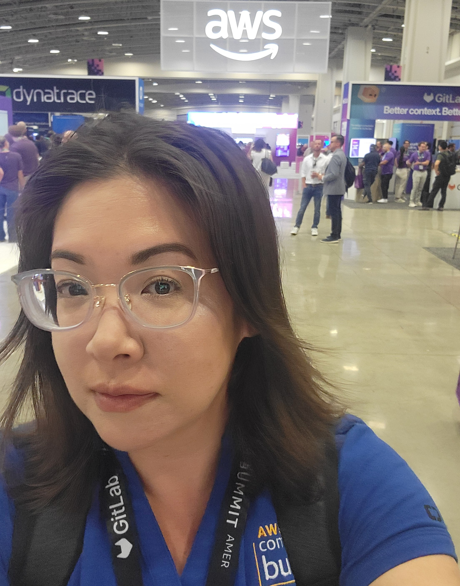
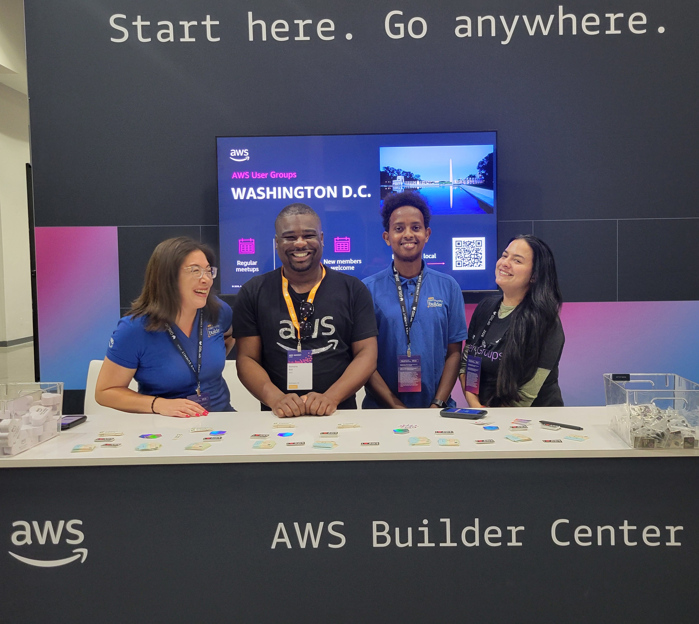
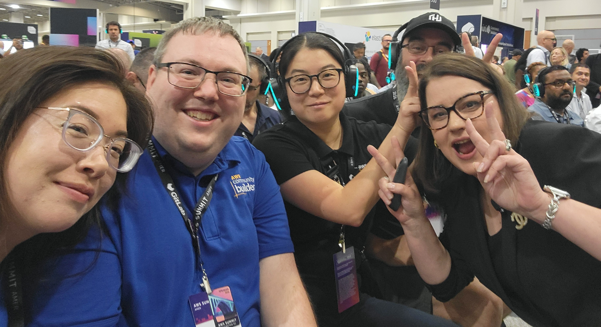
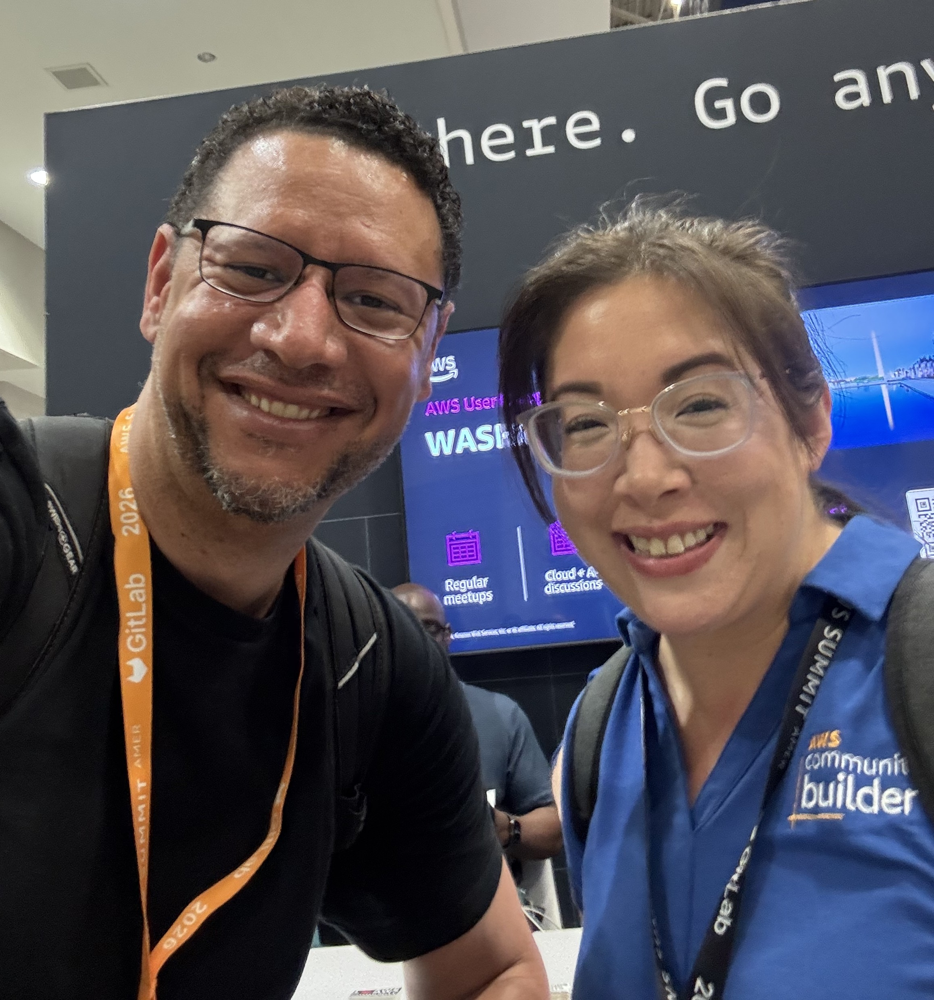
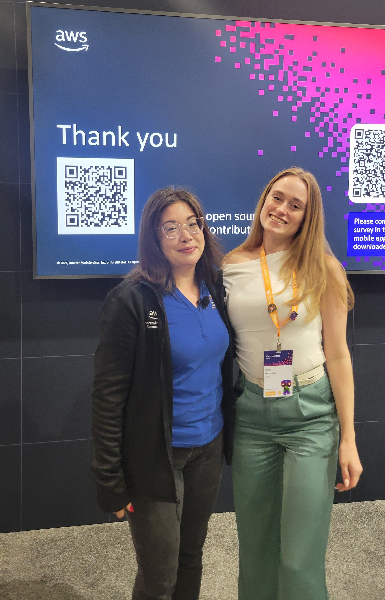

What Happens After You Say Yes
I applied to AWS New Voices because I wanted to face my fear of public speaking. I did not think they would pick me. They did.
I applied to AWS New Voices because I wanted to face my fear of public speaking. To graduate from the program you have to give a public talk. I knew that going in. What I did not know was that before the cohort even started, AWS would ask me if I wanted to pitch a talk for AWS DC Summit.
I did not think they would pick me.
I submitted my pitch anyway. They said yes.

Day 1 at AWS DC Summit. 14,000 people. I forced myself to talk to as many of them as I could.
The People Who Got Me There
After I got accepted as a speaker, Aliza Newman introduced me to Elizabeth Fuentes Leone to help me shape my presentation. Elizabeth is also a mom and one of the nicest people I have come across in this community. She helped me figure out how to tell my story the right way. The morning of my talk she messaged me to wish me luck. That meant a lot.
Because of the summit timing I switched from New Voices Cohort 2 to Cohort 1 so I could complete the program before I got on stage. The cohort taught me breathing exercises, how to structure an introduction, and how to think about what I wanted the audience to walk away with. My talk was a little different because it was half story and half live demo, which is a brand new format for Developer Demos.
I will also say that I had to leave the last class of the cohort early to take my toddler to urgent care. She is fine now. But that is mom life.
After Aliza and Elizabeth reviewed my deck and gave me their edits, Aliza set up a rehearsal with Aaron Hunter. I was nervous going in. Aaron has so much experience and is so talented at what he does. He gave me real advice on how to practice and what to work on. The following week we had a final rehearsal with all of us together: Aliza, Aaron, Hiroko Nishimura, Scott Burgholzer, and myself. We worked through the final recommendations and after that I practiced non stop for days. I was just saying what I was going to say over and over until it stayed in my memory.

At the AWS Builder Center with DeMario Bell on Day 1.
Day 1
AWS DC Summit had around 14,000 people. As an introvert, walking into that was a lot. I forced myself to talk to as many people as I could. I told people I was a speaker and that my talk was the next day. I stopped by the AWS Certification Lounge because I am certified and that felt good to be able to do. I networked and networked. I did not give my card out to everyone, only to people I got good vibes from.

Getting to meet Kathie Kinde Clark in person for the first time. Her session was amazing.
Day 2: Talk Day
The parking garage would not let us in, because it was full. It was triple digits outside. We drove around until we found another spot.
Once we got inside I had about an hour before the talk. We watched Kathie Kinde Clark's session which was amazing, and I got to meet her and DeMario Bell in person for the first time.
When it was time I walked around the stage area to get a feel for the space. I had some caffeine. I did my breathing exercises from New Voices. I stretched and waved my arms around. About 15 minutes before we started the AWS sound person mic'ed us up. Right before we began Aaron put his own mic on me to record for his YouTube channel. When I finished I handed it to Hiroko.

With Aaron Hunter, who coached me through every rehearsal and gave me a fist bump right before I went on.
He noticed I was shaking. I told him I was fine, although it was probably nerves and caffeine. He gave me a fist bump and that was it. I went first, then Hiroko, then Scott.
Once I started talking I was so in the moment that everything else faded away. I had worked on this talk for weeks. I had listened to every piece of advice from Aaron, Aliza, and Elizabeth. I had practiced it more times than I can count.
It was not perfect. I skipped part of the architecture slide and had to go back and correct myself. But Aliza told me afterward that she saw people pulling out their phones to take pictures of my demo and architecture. People were photographing the slides to remember them.
That told me everything I needed to know.

With Aliza Newman after the talk. Thank you for believing in me and inviting me to speak.
After the Talk
A couple of days later I received an email.
Someone attended my talk, went home, and built the tool for his daughter who is job searching. She is a recent college graduate. He said she loves that she can focus on building her resume and making connections instead of spending hours searching job boards.
I did not expect that. I built this tool to solve my own problem. I shared it because the AWS community encouraged me to share my story. And someone used it the day after my talk to help their daughter.
That is why you build real things and solve real problems.
What I Took Away
I am really proud of myself for facing this fear. And I will say this: speaking in front of a room of people at AWS DC Summit made my job interview the following week feel manageable. I was not as nervous because I had already stood in front of so many people and done it.
Thank you to Aliza Newman for believing in me and inviting me to speak. Thank you to Elizabeth Fuentes Leone for your help and support along the way. Thank you to Aaron Hunter for the advice, the expertise, and the fist bump right before I went on.
Build real things. Solve real problems. Then tell people about it.
If you want to see my serverless job alert system, visit stratajen.net or connect with me on LinkedIn.